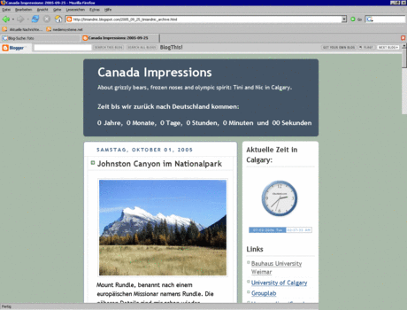
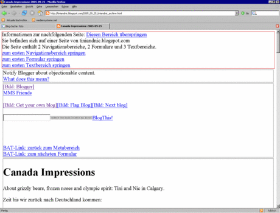
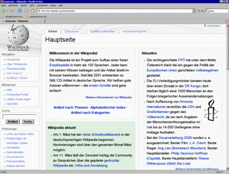
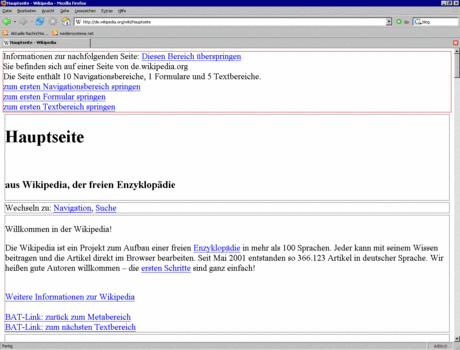

<script type="application/ld+json">
    {
        "@context": "http://schema.org/",
        "@type": "Research",
        "name": "BAT",
        "description": "",
        "url": "https://webis.de/research/bat.html",
        "keywords": [
            "bat"
        ],
        "creator": [{
                "@type": "Organization",
                "url": "https://webis.de/",
                "name": "The Web Technology & Information Systems Network",
                "alternateName": "Webis"
            },
            {
                "@type": "Person",
                "url": "http://www.uni-weimar.de/medien/webis/people/#potthast",
                "affiliation": "Bauhaus-Universit\u00e4t Weimar",
                "name": "Potthast, Martin"
            },
            {
                "@type": "Person",
                "url": "http://www.uni-weimar.de/medien/webis/people/#stein",
                "affiliation": "Bauhaus-Universit\u00e4t Weimar",
                "name": "Stein, Benno"
            }
        ],
        "includedInDataCatalog": {},
        "distribution": []
    }
</script>

<main class="uk-section uk-section-default">
    <div class="uk-container">
        <h1>BAT</h1>

        <ul class="uk-list">
            <!-- Comment out sections you do not provide -->
            <li><span data-uk-icon="chevron-down"></span> <a href="#synopsis">Kurzbeschreibung</a></li>
            <li><span data-uk-icon="chevron-down"></span> <a href="#research">Forschung</a></li>
            <li><span data-uk-icon="chevron-down"></span> <a href="#people">Personen</a></li>
        </ul>
    </div>

    <div class="uk-container uk-margin-medium">
        <!--
        SECTION Synopsis
        -->
        <h2 id="synopsis">Kurzbeschreibung</h2>

        <p>Das Blind-Accessibility-Tool BAT soll Blinden und Sehbehinderten das Zurechtfinden auf Webseiten
            erleichtern. Ziel ist es, einzelne inhaltliche Abschnitte einer Seite zu erkennen, die in einem so
            genannten Metaabschnitt am Anfang der Seite aufgelistet werden. Auf diese Weise wird Blinden der direkte
            Zugriff auf die Inhalte einer Webseite erm&ouml;glicht, ohne dass sie die gesamte Seite vollst&auml;ndig
            erfassen m&uuml;ssen. BAT ist eine Browsererweiterung f&uuml;r Firefox, die im laufenden Betrieb aktiviert
            werden kann. [<a class="internal-link" href="https://www.uni-weimar.de/medien/webis/research/activities/bat/bat-latest.xpi">Firefox</a>]
        </p>
        <!--
        SECTION Research
        -->
        <h2 id="research">Forschung</h2>
        <p>Blinde m&uuml;ssen beim Zugriff auf das Internet viele Hindernisse &uuml;berwinden. Insbesondere Webseiten,
            die nicht hinsichtlich Benutzerfreundlichkeit und Barrierefreiheit optimiert sind, stellen gro&szlig;e
            Schwierigkeiten dar, da sie oft nicht korrekt wiedergegeben werden k&ouml;nnen. Die Zug&auml;nglichkeit
            leidet vielfach, da der Aufbau von Webseiten eher gestalterischen Richtlinien unterliegt, und sich kaum
            jemand Gedanken um blinde Besucher macht. Hinzu kommt, dass blinde Internetnutzer zun&auml;chst keinen
            &uuml;berblick &uuml;ber eine Webseite haben und sich zeilenweise durch den gesamten Inhalt arbeiten
            m&uuml;ssen. Es dauert also eine Weile, bis sie zu den gew&uuml;nschten Informationen gelangen oder
            feststellen, dass die gar nicht vorhanden sind. Wir verfolgen daher den Ansatz, ankommende Webseiten direkt
            im Webbrowser zu vereinfachen und zusammenzufassen. Indem inhaltliche Abschnitte erkannt und in einem
            Metabereich zusamengefasst werden, der als vereinfachte Navigation dient, wird ein schneller Zugriff
            gew&auml;hrleistet. Die Vereinfachung der Webseite befreit sie von allem, was von Blinden nicht erfasst
            werden kann oder belanglos f&uuml;r sie ist. Die nachfolgenden Bildschirmfotos zeigen zwei Webseiten,
            jeweils in Normalansicht und mit Hilfe von BAT bearbeitet.</p>
        <div style="display:flex; flex-wrap: wrap">
            
            
            
            
        </div>

        <p>Die Erkennung einzelner Abschnitte beruht auf der Suche und Auswertung von Trennelementen. Wir gehen dabei
            davon aus, dass jeder Abschnitt einen gewissen Abstand zu anderen Abschnitten hat bzw. dass bestimmte
            HTML-Elemente zur ihrer Trennung genutzt werden. Jeder gefundene Abschnitt wird in eine der Kategorien
            &quot;Inhalt&quot;, &quot;Navigation&quot; oder &quot;Formular&quot; eingeordnet. Schon w&auml;hrend der
            Suche werden die Seiten regelbasiert vereinfacht. Dazu geh&ouml;rt, dass Elemente, die f&uuml;r den Blinden
            keinen Nutzen haben, entfernt werden. Beispielsweise sind das Bilder ohne Alternativtext, Stylesheets oder
            Flash-Elemente. Bilder mit Alternativtext, werden durch diesen ersetzt. Webseiten werden in der Software
            durch das Document-Object-Model (DOM) repr&auml;sentiert. Es modelliert die hierarchische Struktur der
            Webseite, also die vorliegende Verschachtelung von HTML-Elementen, die Ausgangspunkt f&uuml;r die
            Abschnittserkennung ist.</p>

        <div style="display:flex">
            <p><em>Blindengerechte Zugangsplattform</em>. Mit Firefox und dem Blind Accessibility Tool steht eine
                plattform&uuml;bergreifende L&ouml;sung f&uuml;r den blindengerechten Zugriff auf das Internet zur
                Verf&uuml;gung. Sie ist unabh&auml;ngig vom eingesetzten Screenreader (z.B. JAWS 7) oder
                Betriebssystem, erleichtert ihnen jedoch die Aufarbeitung der angezeigten Inhalte. Ein Screenreader ist
                eine alternative Benutzerschnittstelle. Sie vermittelt die Informationen, die gew&ouml;hnlich auf dem
                Bildschirm ausgegeben werden mit Hilfe nicht-visueller Ausgabeger&auml;te. Die Bedienelemente und Texte
                werden dabei mittels Sprachsynthese akustisch, oder taktil &uuml;ber eine Braillezeile wiedergegeben.
                Die Ausgabe ist dabei nicht auf Text beschr&auml;nkt: Wiedergegeben werden alle am Bildschirm
                dargestellten grafischen Elemente wie Fenster, Men&uuml;s, Auswahlboxen, aktuelle Eingabeposition,
                Symbole usw. Eine Braillezeile wird als Ausgabeger&auml;t an einen Computer angeschlossen. Mit ihr
                k&ouml;nnen die Zeichen auf dem Bildschirm in Brailleschrift ausgegeben werden. </p>
            
        </div>
        <!--
        SECTION People
        -->
        <h2 id="people">Personen</h2>
        <ul>
            <li><a title="Martin Potthast" class="internal-link" href="http://www.uni-weimar.de/medien/webis/people/#potthast">Martin
                    Potthast</a></li>
            <li><a title="Benno Stein" class="internal-link" href="http://www.uni-weimar.de/medien/webis/people/#stein">Benno
                    Stein</a></li>
        </ul>
        <p>Students: Anne K&ouml;psel, Katja Sch&ouml;llner</p>

        <!--
	SECTION Publications
	-->
        <!-- <h2 id="publications">Publications</h2>
        <div id="publications-list">
        </div> -->
    </div>
    </div>
</main>

<script src="https://webis.de/js/bibentry.js"></script>
<script>
    //includeBibentries(document.getElementById("publications-list"), "projects:clickbait");
</script>